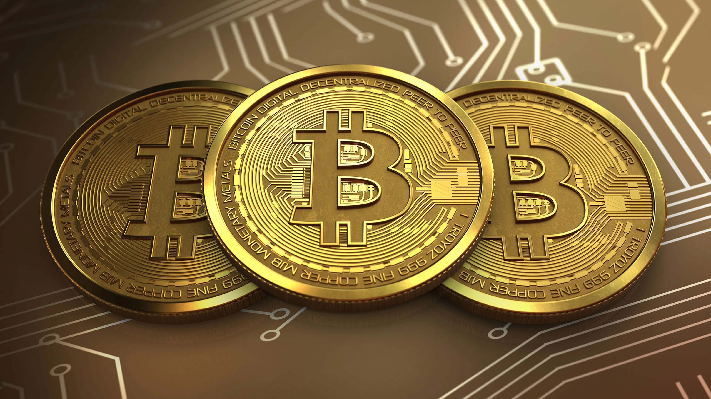
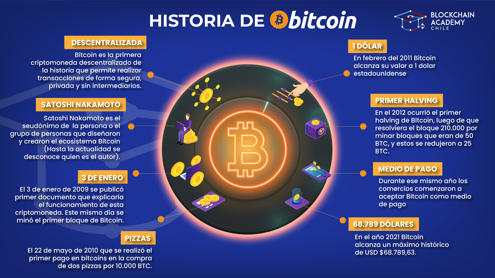
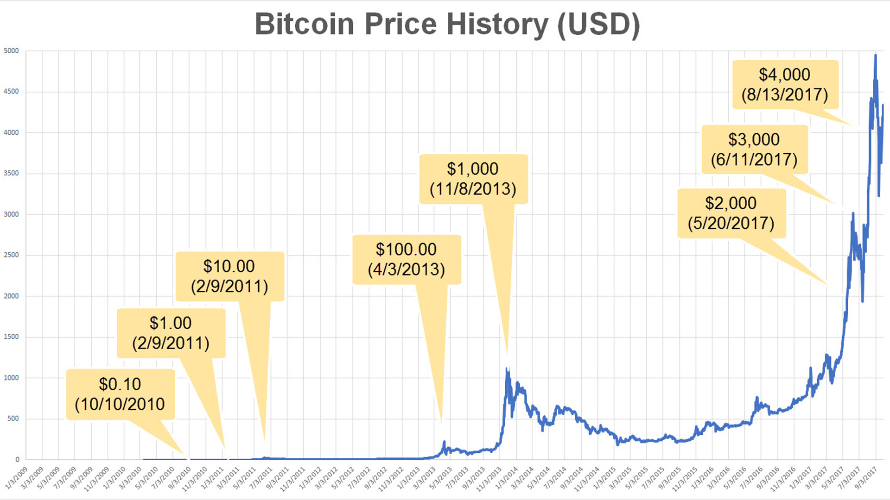
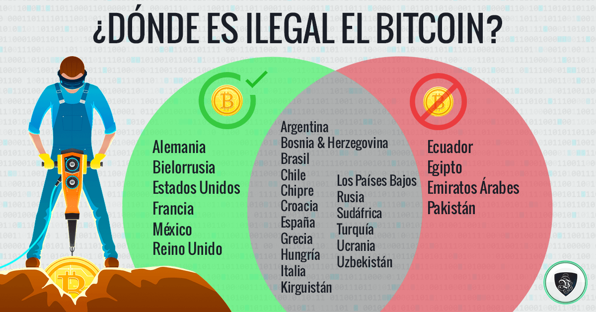
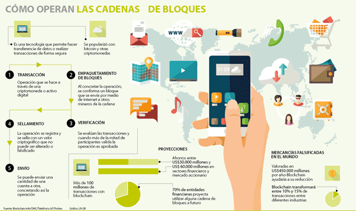

 Bitcoin es una criptomoneda digital descentralizada que permite realizar transacciones de forma segura y sin necesidad de intermediarios. Usada como moneda virtual o un medio de intercambio electrónico que sirve para adquirir productos y servicios. Consiste en una clave criptográfica que se asocia a un monedero virtual, el cual descuenta y recibe pagos. Una de las características clave de Bitcoin es su oferta limitada. Solo habrá 21 millones de bitcoins en existencia y esta escasez se logra a través de un proceso llamado minería. Los mineros utilizan computadoras potentes para resolver problemas matemáticos complejos y, cuando tienen éxito, son recompensados con bitcoins recién creados. Este proceso también asegura la red y verifica las transacciones.
 Bitcoin fue presentado por primera vez en 2008 en un documento técnico publicado por una persona o grupo de personas que usaban el seudónimo Satoshi Nakamoto. En 2009, se lanzó la primera versión del software de Bitcoin, lo que permitió la creación y transferencia de bitcoins. Desde entonces, ha experimentado un crecimiento significativo y ha ganado popularidad en todo el mundo. Entre 2010 y 2011 comenzaron a surgir plataformas de intercambio que facilitaban la compraventa de bitcoins con dinero local a través de transferencias bancarias. A estas le siguieron las pasarelas de pago que ofrecían a los comerciantes la posibilidad de aceptar pagos con bitcoins cobrando el importe de las ventas en moneda local directamente en sus cuentas bancarias.
 Bitcoin opera bajo un sistema monetario descentralizado. A diferencia de las monedas fiduciarias tradicionales, no está respaldado por un gobierno o entidad centralizada. En su lugar, se basa en la oferta y la demanda en los mercados, lo que puede causar volatilidad en su precio. Bitcoin tiene una oferta máxima limitada de 21 millones de monedas, lo que contribuye a su valor como una forma de almacenamiento de valor. Existen diversidad de plataformas que facilitan el intercambio de Bitcoin por otras criptomonedas, incluyendo monedas de precio estable denominadas stablecoins. En la actualidad una cantidad considerable de empresas y pequeños negocios aceptan bitcoines como medio de pago para servicios de todo tipo. Su alcance internacional, y el hecho de que los usuarios pueden comerciar de forma pseudoanónima, ha permitido que se abra paso en sectores cada vez más regulados, como apuestas en línea y partidas de póker.
 La legalidad de Bitcoin varía según el país. Algunos gobiernos han adoptado regulaciones amigables con las criptomonedas, mientras que otros han impuesto restricciones o prohibiciones. Es importante investigar y comprender las regulaciones y leyes locales antes de involucrarse en transacciones con Bitcoin. Por lo general, cuando no existe un marco regulador, se asume su alegalidad (estatus de «no regulado») en función del principio de legalidad del Derecho, el cual señala que solo pueden castigarse las conductas expresamente descritas como delitos en una ley anterior a la comisión de la acción, lo que, dicho de otro modo, establece que está permitido todo aquello que no está expresamente prohibido por la ley.
 Bitcoin se basa en la tecnología blockchain, que es un registro público y distribuido que registra todas las transacciones de Bitcoin. Las transacciones se verifican y se agrupan en bloques que se añaden a la cadena de bloques de forma secuencial. Los mineros, a través de la resolución de problemas matemáticos complejos, validan las transacciones y aseguran la red. Estas transacciones son pseudónimas, lo que significa que las identidades de las partes involucradas no están directamente asociadas con las transacciones. A la generación de nuevos bloques se le conoce como «minería», por analogía con la minería del oro. La construcción de la cadena de bloques se hace por medio de esta actividad, la cual permite mantener una red peer-to-peer basada en la tecnología blockchain actualizada y segura.Todos los mineros de la red compiten para ser los primeros en encontrar la solución al problema criptográfico de su bloque candidato actual, bajo las reglas de un sistema de pruebas de trabajo. El objetivo concreto de los mineros es buscar un nonce válido para el bloque que están minando. Este proceso de prueba-error hace costosa la generación de bloques e incentiva a los mineros a invertir su trabajo en acciones honestas.